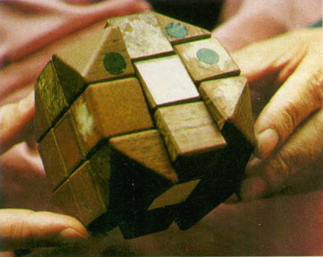

1974
Ernő Rubik, an architect professor, creates the first ever Rubik cube model using rubber bands and woods to demonstrate to his students three-dimensional geometry. It took him a little over a month to solve it fully and the first name given to the cube by Rubik was the "Magic Cube".
